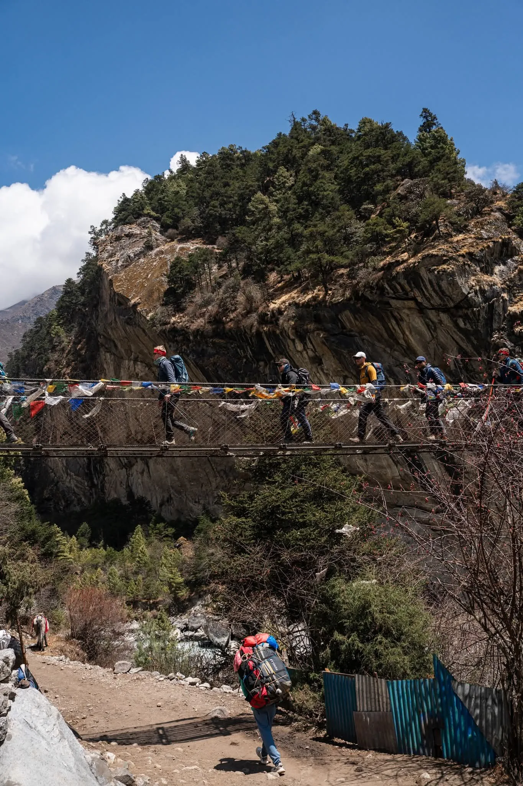

1. The Journey to the Roof of the World: Route Architecture from Kathmandu to EBC

Reaching Everest Base Camp (5,364m / 17,598ft) on the south side of Mount Everest in Nepal is a multi-stage expedition. There are no motor roads leading into the high Khumbu Valley.
The entire journey breaks down into three distinct operational segments:
- Segment 1: International Arrival in Kathmandu (1,400m): Landing at Tribhuvan International Airport (KTM), securing your Nepal tourist visa, meeting your expedition director at Igloo Himalaya Treks, checking gear, and receiving your pre-trek briefing.
- Segment 2: Gateway Transport to the Trailhead: Choosing between a short mountain flight into Lukla (2,846m), an overland 4WD jeep drive to Tham Danda / Salleri, or a scenic helicopter transfer.
- Segment 3: The 65km Walking Approach: An 8-day gradual uphill hike covering 65 kilometers along the roaring Dudh Koshi river, ascending from Lukla through Namche Bazaar, Tengboche, and Dingboche to Gorak Shep and Base Camp, followed by a 3-day descent back to Lukla.
2. Route Option 1: The Classic Kathmandu / Ramechhap Flight to Lukla

For over 90% of international trekkers, the journey begins with the thrilling flight to Tenzing-Hillary Airport in Lukla (LUA / VNLK):
- The Airport Profile: Built in 1964 under the supervision of Sir Edmund Hillary, Lukla's runway is 527 meters (1,729 feet) long with an 11.7% uphill gradient to slow incoming aircraft. Perched on a dramatic mountain shelf at 2,846m, it terminates into a sheer granite cliff wall at one end and a 700-meter drop into the Dudh Koshi gorge at the other.
- Airlines & Aircraft: Flights are operated exclusively by specialized STOL (Short Take-Off and Landing) twin-engine turboprop aircraft (Dornier Do 228, Twin Otter, and Let L-410) flown by veteran mountain pilots from Tara Air, Summit Air, and Sita Air.
- Ticket Cost & Flight Time: Standard round-trip airfare is approximately $430 to $450 USD for foreign nationals ($220–$225 one-way), including 15kg of luggage. Flight duration is 30 to 35 minutes from Kathmandu, or 18 to 20 minutes from Manthali (Ramechhap).
3. The Ramechhap (Manthali) Airport Shuttle Reality in Peak Season
If you travel during the peak trekking months of Autumn (October & November) or Spring (March, April & May), your flight will almost certainly operate from Manthali Airport in Ramechhap rather than Kathmandu:
Why the Diversion Exists
Tribhuvan International Airport in Kathmandu has only one single runway serving domestic and international wide-body airliners. To eliminate chaotic air-traffic holding patterns and delays, the Civil Aviation Authority of Nepal (CAAN) diverts all Khumbu commercial flights to Manthali Airport, located 132 km east of the capital.
The Overland Shuttle Logistics
Your transport from Kathmandu departs between 1:30 AM and 2:30 AM to reach Manthali by 6:00 AM, in time for early-morning flight departures before mountain winds rise. The drive takes 4 to 5 hours via the paved BP Highway. Shared tourist vans cost $25–$35 one-way; private Scorpio 4WD jeeps cost $150–$180.
While the early 2:00 AM wake-up drive is inconvenient, Manthali Airport has a much higher flight completion rate than Kathmandu. Because the flight to Lukla is only 18 minutes, aircraft shuttle back and forth continuously, completing up to 60 flights in a single morning!
4. Route Option 2: Overland by 4WD Jeep (The Road-Based Route via Salleri / Tham Danda)

For travelers who are terrified of flying into Lukla, or those traveling on a strict budget, the overland 4WD jeep route is an increasingly popular, 100% weather-proof choice:
- The Drive (Kathmandu to Tham Danda): You board a rugged 4WD Mahindra Scorpio jeep in Kathmandu early in the morning. The drive heads east along the Sun Koshi river, passes through Salleri, and climbs over rough dirt roads to Tham Danda or Paiya (10 to 12 hours total). Shared jeep tickets cost only $35 to $45 USD one-way (saving ~$360 compared to flights).
- The Hike (Tham Danda to Phakding): From Tham Danda, you hike 2 scenic days through lush Sherpa and Rai farming hamlets (Paiya, Surke, and Chheplung), joining the main trail below Phakding without ever entering Lukla Airport.
- Why Trekkers Love This Route: Zero airport delays, zero flight cancellations, gradual low-altitude cardiovascular warm-up, and walking through authentic non-commercial agricultural valleys.
5. Route Option 3: The Historic Pioneers' Route via Jiri (Sir Edmund Hillary's Path)
Before Tenzing-Hillary Airport was constructed in 1964, every mountaineering expedition—including the historic 1953 British expedition led by Sir John Hunt, Sir Edmund Hillary, and Tenzing Norgay—walked from the Kathmandu Valley:
- The Route: Drive from Kathmandu to Jiri or Shivalaya (190 km / 7–8 hours). From Jiri, you hike 6 to 7 days across three major mountain passes: Deurali Pass (2,705m), Lamjura La Pass (3,530m), and Taksindu La (3,071m) before reaching Lukla.
- Total Expedition Length: 18 to 21 days total.
- Why Choose Jiri? This is the ultimate trek for history enthusiasts and purists. It offers the most thorough, gradual physical conditioning on Earth. By the time you reach Namche Bazaar on Day 8, your red blood cell count and leg stamina are so advanced that high altitude feels effortless.
6. Route Option 4: Direct Helicopter Flight to Lukla or Everest Base Camp
Helicopters offer the ultimate blend of luxury, speed, and weather resilience in the Himalayas:
Shared Heli Shuttle Upgrade ($250 – $350)
When fixed-wing aircraft are grounded by low clouds in Lukla, commercial B3e helicopters frequently continue flying. Paying a shared-seat surcharge of $250–$350 gets you to Lukla on time, saving your trekking schedule from weather delays.
1-Day Everest Helicopter Tour ($1,100 – $1,300)
For travelers who lack the 14 days required to hike, a 1-day helicopter charter flies from Kathmandu, lands at Kalapathar (5,400m) for 10 minutes of awe-inspiring photos, stops for breakfast at Hotel Everest View (3,880m), and returns to Kathmandu by 11:30 AM.
The Trek-Up / Fly-Down Helicopter Combo ($800 – $1,200 per seat)
The premier way to experience EBC: Complete the full 8-day hike up to Everest Base Camp and Kala Patthar on foot. Then, on Day 9, board a chartered helicopter from Gorak Shep (5,164m) and soar directly back to Lukla or Kathmandu in 45 minutes, skipping the grueling 3-day descent on tired knees.
7. Luggage Limits, Packing Restrictions & Baggage Logistics for Lukla Flights
Because twin-engine aircraft operate in thin mountain air where lift is reduced, weight limits are rigorously enforced at Kathmandu and Manthali airports:
| Luggage Piece | Weight Allowance | Carried By | Notes & Restrictions |
|---|---|---|---|
| Main Duffel Bag (Checked) | 10 kg (22 lbs) | Mountain Porter | Waterproof expedition duffel bag; contains clothes, sleeping bag, and heavy gear. |
| Daypack (Cabin Carry-On) | 5 kg (11 lbs) | Trekker (You) | 25–30L backpack; carries passport, cash, camera, rain jacket, fleece, water. |
| Total Passenger Allowance | 15 kg (33 lbs) Total | Combined | Overweight baggage costs $2 to $3 USD per extra kg, subject to plane payload. |
Pro-Tip: Leave your rolling suitcases, clean city clothes, and non-trekking items in the secure luggage storage room at your Kathmandu hotel (free of charge) before boarding your mountain flight.
8. Lukla Weather Delays & Cancellation Contingency Playbook

Lukla Airport operates under Visual Flight Rules (VFR). Pilots navigate through mountain passes purely by sight. If heavy cloud cover, low fog, or severe wind gusts obstruct the runway, flights are immediately suspended for safety.
Follow this 4-step contingency playbook to handle weather delays like a pro:
- Build Mandatory Buffer Days into Your International Ticket: Always schedule at least 1 to 2 buffer days in Kathmandu between your scheduled trek return date and your international flight home. Never book an international flight on the same day you are scheduled to fly out of Lukla!
- The Morning Golden Window: Weather in the Himalayas is clearest between 6:00 AM and 10:30 AM. Reputable agencies book earliest-priority morning slots (Flight 1 or Flight 2) to maximize landing probability.
- The Helicopter Escape Hatch: If fixed-wing planes are canceled for two consecutive days, pool funds with fellow travelers to book a shared 5-passenger helicopter shuttle, which can navigate lower cloud ceilings.
- The Overland Road Pivot: In prolonged bad weather, hire a 4WD jeep from Kathmandu to Tham Danda or take a jeep from Salleri back to Kathmandu.
9. Trail Logistics: The 65km Walking Highway from Lukla to Base Camp

Once you touch down on the asphalt of Lukla, the mechanical journey ends and the human walking journey begins. You will hike 65 kilometers (40 miles) uphill over 8 days:
- Days 1 & 2: The Lower Canyon Approach: Hiking from Lukla (2,846m) down to Phakding (2,610m) alongside the emerald Dudh Koshi river. Crossing soaring suspension bridges draped in Buddhist prayer flags, including the iconic double-decked Hillary Suspension Bridge, before climbing the steep switchbacks to Namche Bazaar (3,440m).
- Days 3 to 5: Monasteries & Alpine Tundra: Traversing from Namche past the spiritual sanctuary of Tengboche Monastery (3,860m), crossing the treeline into alpine scrub, and arriving at Dingboche (4,410m) beneath the soaring spire of Ama Dablam.
- Days 6 to 8: The Glacial Frontier: Passing through Thukla (4,620m), climbing the Everest climbers' memorial ridge, and traversing the rocky Khumbu lateral moraine from Lobuche to Gorak Shep (5,164m) before reaching the ice boulders and prayer flags of Everest Base Camp (5,364m).
10. Altitude Acclimatization Strategy on the Ascent
You cannot rush the journey to Everest Base Camp. Gaining elevation too quickly triggers Acute Mountain Sickness (AMS), High Altitude Pulmonary Edema (HAPE), or Cerebral Edema (HACE).
Every medically sound itinerary incorporates two mandatory acclimatization stops:
Acclimatization Stop 1: Namche Bazaar (3,440m / Day 3)
Your first rest day. You hike 400 vertical meters up to the panoramic terrace of Hotel Everest View (3,880m) to catch your first majestic glimpse of Everest, Lhotse, and Ama Dablam. After relaxing for an hour, you descend to sleep at Namche, practicing the proven "Climb High, Sleep Low" physiological rule.
Acclimatization Stop 2: Dingboche (4,410m / Day 6)
Before pushing into the sub-5,000m death zone, you spend two nights in Dingboche. On your rest day, you climb the steep ridge of Nagarjun Peak (Nangkartshang Hill / 4,900m). Exposing your blood to 55% oxygen stimulates erythropoietin (EPO) production, ensuring you are primed for Gorak Shep and Kala Patthar.
11. Mandatory Permits, Checkposts & Paperwork Requirements
To enter the Everest region legally, every foreign trekker must pass through official military and local government checkposts with two required permits:
- 1. Khumbu Pasang Lhamu Rural Municipality Permit: Cost is NPR 3,000 (~$23 USD) per person. Purchased at the local government counter directly upon arrival at Lukla or at the Monjo entry gate.
- 2. Sagarmatha National Park Entry Permit: Cost is NPR 3,390 (~$26 USD) per person (NPR 3,000 + 13% government VAT). Purchased at the Department of National Parks and Wildlife Conservation counter in Monjo or pre-issued in Kathmandu.
- Permit Checkpoints: Officers check and stamp your permits at Lukla, Monjo, Namche Bazaar, and Dingboche. When trekking with Igloo Himalaya Treks, all paperwork and checkpost logistics are managed seamlessly by your guide.
12. Guide, Porter & Agency Logistics: Booking Ahead vs. On Arrival
While it was once common for backpackers to arrive in Kathmandu and negotiate with street touts in Thamel, booking in advance through an authorized agency is essential in 2026:
- Guaranteed Flight Manifests: During peak Autumn and Spring, Lukla flights sell out 2 to 3 months in advance. Reputable agencies pre-block flight seats on earliest-morning manifests. Walk-in tourists in Thamel frequently face 3- to 5-day flight waiting lists.
- Senior Sherpa Guide Allocation: Booking early ensures you are paired with a seasoned, NATHM-certified guide with Wilderness First Responder credentials, rather than an inexperienced emergency fill-in.
- Pre-Reserved Teahouse Beds: In small settlements above Namche (like Lobuche and Gorak Shep), teahouses have only 20 to 30 rooms. Unaccompanied independent hikers regularly arrive to find lodges full, forcing them to sleep on dining hall benches in sub-zero cold.
13. Teahouse Lodging & Daily Living Realities on the Route
The Everest Base Camp trail features the most established teahouse network in the Himalayas:
- Room Standards: Simple twin bedrooms with two wooden single beds, foam mattresses, pillows, and clean blankets. Rooms are unheated, so your four-season down sleeping bag is your personal cocoon.
- Communal Dining Halls: The heartbeat of every lodge. Heated every evening from 5:00 PM to 8:30 PM by a central iron stove burning dried yak dung. Here, hikers from dozens of nations eat hot meals, play cards, and share trail stories.
- Hygiene & Toilets: Lower lodges have western-style flush toilets; higher outposts (Lobuche and Gorak Shep) feature traditional squat toilets. Always carry your own biodegradable toilet paper and hand sanitizer.
14. Best Seasonal Windows to Travel to Everest Base Camp
Weather dictates flight reliability, trail safety, and mountain visibility:
| Season | Months | Trail Highlights & Visibility | Lukla Flight Reliability |
|---|---|---|---|
| Autumn (Peak) | Oct – Nov | Crystal-clear deep blue skies, dry trails, crisp mountain views, post-monsoon freshness. | Very High (85–90% on-time) |
| Spring (Prime) | Mar – May | Warming temperatures, blooming rhododendrons, active mountaineer tent city at EBC. | High (75–85% on-time) |
| Winter | Dec – Feb | Crisp skies, empty trails, severe cold (-20°C at Gorak Shep), heavy snow potential. | Moderate: Clear mornings; afternoon wind delays |
| Monsoon | Jun – Aug | Heavy daily rain, obscured peaks, leeches in lower valleys, slippery mud. | Very Low: Frequent multi-day flight cancellations |
15. Total Transit & Route Cost Comparison Matrix

Compare the four primary routes to Everest Base Camp across duration, transport method, and estimated budget:
| Route Option | Total Days | Primary Transport Mode | Estimated Budget (USD) | Best For |
|---|---|---|---|---|
| 1. Classic Flight to Lukla | 12 – 14 Days | Flight to Lukla (35 min) + 65km hike | $1,350 – $1,650 | 90% of trekkers; fastest and most balanced route. |
| 2. Overland 4WD Jeep (Tham Danda) | 16 – 17 Days | Scorpio 4WD Jeep (12 hrs) + hike | $1,100 – $1,350 | Budget travelers; flight-averse hikers; weather immunity. |
| 3. Historic Pioneers' Route (Jiri) | 18 – 21 Days | Overland bus/jeep to Jiri + hike | $1,400 – $1,700 | Purists; optimal gradual acclimatization; zero crowds. |
| 4. Heli-Trek / Helicopter Return | 9 – 11 Days | Fly to Lukla, hike up, heli-fly down | $2,200 – $3,200 | Time-conscious travelers; skipping knee-jarring descent. |
16. Why Travel to Everest Base Camp with Igloo Himalaya Treks
Navigating the logistics of Everest requires an experienced local partner with deep Himalayan roots:
- Priority Lukla Flight Manifests: We hold direct corporate ticketing agreements with Tara Air and Summit Air, securing prime early-morning flight slots for our guests.
- Direct Helicopter Dispatch Backup: If weather grounds fixed-wing flights, our 24/7 Kathmandu operations desk coordinates immediate shared helicopter charters or overland jeep pivots.
- Certified High-Altitude Sherpa Leadership: Our guides are NATHM-licensed professionals with Wilderness First Responder medical training, carrying daily pulse oximeters and comprehensive first aid supplies.
- Free Technical Down Gear: All our guests receive complimentary use of four-season -20°C sleeping bags, alpine down jackets, and 100L waterproof expedition duffel bags.
Frequently Asked Questions (FAQ) About Getting to Everest Base Camp
Select a category below to explore expert answers to the most common questions travelers ask about How to Get to Everest Base Camp:
General & Planning

Ready to Experience the Himalayas?
Whether you are preparing for high-altitude trekking, cultural circuits, or alpine summit expeditions, start planning a bespoke journey tailored to your fitness, travel season, and style.